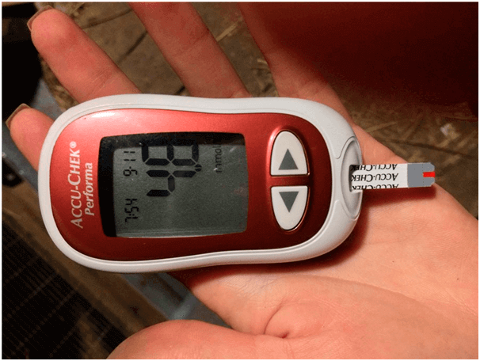

BIZNIS pasiremiant LIGOMIS:
apie DIABETĄ sužinosite viską, kas buvo slepiama
ilgus metus
Kategorija: Diabetikui naudingi straipsniai Paskelbta:
Sveiki! Mano vardas yra Andrius Petraitis.
Niekada nebuvau rašęs atsiliepimų, bet nusprendžiau padėti žmonėms, kurie, kaip aš, serga diabetu. Kadangi dėl medicininių klaidų beveik netekau savo gyvenimą.
Man 35 metai, turiu žmoną ir du vaikus. Dirbu virėju mokyklos valgykloje. Prieš dešimt metų man buvo diagnozuotas 2 tipo cukrinis diabetas. Tuomet visa laiką jaučiausi pavargę, negalėjau tinkamai valgyti, priversdavau save valgyti tik neriebius patiekalus. Ir tai su mano darbu! Be to, nuolat turėjau stebėti cukraus kiekį kraujyje.

Pradėdavau savo dieną pradurdamas savo pirštą ir išmatuodamas cukraus lygį. Vaistams pirkti išeikvodavau kelius šimtų eurų per mėnesį. Ir tai dirbdamas virėju! Katastrofa! Be to neseniai tablečių KAINOS Lietuvoje labai jaučiamai padidėjo.

Turėjau parduoti savo vasarnamį ir automobilį, imti paskolą, kad galėčiau mokėti už gydymą ir pirkti testų juosteles... Situacija buvo tikrai baisi ir beviltiška. Aš nuolat vemdavau, ir už porą mėnesių labai nutukau. Ir tapau našta savo šeimai. Gyvenau baimėje, kad vaikai taip pat susirgs 2 tipo diabetu.
Aš maniau, kad blogiau jau nebebus, bet vienąkart atsitiko atvejis, kuris ant kortos pastatė visa mano gyvenimą.
Nusipirkau naujus batus ir, juos dėvėdamas, atsirado nuospaudos kojose. Po kurio laiko jos pasidarė negyjančiomis žaizdomis. Skausmo nejaučiau, bet buvo sunku vaikščioti, deginimo pojūtis ant pėdų, todėl nuvažiavau į gydytoją. Jis sakė, kad yra didelė gangrenų vystymosi tikimybė, o tai reiškia tik vieną - aš galiu NETEKTI KOJOS!!!

Tai, ką išgirdėjau, metė mane į šaltą prakaitą. Aš žinojau, kad gangrenas yra gana dažnas reiškinys diabetu sergantiems žmonėms, tačiau nemaniau, kad pats susidursiu su tuo. Kaip galėsiu gyventi ir dirbti be kojos!? Nuo gydytojo išėjau su didžiule baime dėl savo gyvenimo, rankose laikydamas vaistų sąrašą dar šimtams eurų.
Tą pačią dieną vakare susiskambinau skype su senu mokyklos draugu, jis gyvena JAV. Jis išklausė mano bėdą apie tai, kad su sveikata problemos, kad nėra pakankamai pinigų vaistams. Savo ruožtu jis man pasakė, kad JAV vaistų rinkoje yra panaši situacija. Jų gydytojai taip pat rekomenduoja pirkti brangius vaistus, kurie tik blogina sveikatą. Galų gale, KUO DAUGIAU SERGANČIŲJŲ, tuo DAUGIAU REIKIA TABLEČIŲ. O jų pardavimas duoda dideles pajamas farmacinėms kompanijoms. Manau, kad Lietuvoje šiuo klausimu yra tokia pati padėtis, tik kad visi apie tai tyli.

Paklausiau draugo, gal jis žino, kuo diabetas gydomas JAV, jis man pasakė, kad dabar visi atsisako įprastų vaistų ir vartoja natūralius maisto papildus. Jų efektyvumas yra kelis kartus didesnis, be to, jie nekenkia organizmui, skirtingai nuo tablečių. Beveik visi mums žinomi vaistai nuo diabeto JAV pakeisti specialiu vaistu – “” . Čia Lietuvoje nebuvau apie tai girdėjęs, todėl paprašiau duoti man nuorodą į šį vaistą.
Aš sužinojau, kad “” yra organinis vaistas lašai pavidalu. Jo pagrindinis komponentas yra inulinas, gautas iš augalo Heliánthus tuberósus. Jis šimtmečius buvo naudojamas rytietiškoje medicinoje, siekiant normalizuoti cukraus kiekį kraujyje. Po daugelio tyrimų šiuolaikinis mokslas įrodė šio polisacharido veiksmingumą kovojant su 2 tipo diabetu. Ir svarbiausia, inulinas kartu su L-argininu padeda atkurti kasos ląsteles, gaminančias insuliną!

„“ yra vienintelis papildas, pagrįstas šiuo ekstraktu. Esant 2 tipo cukriniam diabetui, jis sumažina gliukozės kiekį kraujyje, sumažina arba visiškai pašalina (daugiau nei 20% ligonių) hipoglikeminių vaistų poreikį, stiprina kraujagysles ir reguliuoja metabolizmą.
”” rekomenduojama vartoti tiek kartu su taikoma vaistų
terapija, tiek kaip PREVENCIJA, jei galimas ligos vystymosi pavojus.
Aš nusprendžiau išbandyti “”, nes tuo momentu nebaturėjau ko prarasti ir užsisakiau
jį tiesiogiai gamintojo svetainėje.
Vartojimas vyko taip: ryte įpildavau šiltą vandenį į stiklinę, ištirpdavau lašai šaukštelį be kalnelio ir išgerdavau mažais gurkšniais. Tiesą sakant, aš netikėjau stebuklu. Ir veltui... Po savaitės pastebėjau, kad jau esu mažiau pavargęs, pamažu galėjau valgyti savo mėgstamą maistą. Cukraus lygis kraujyje normalizavosi (prieš vartojant “”, gliukozės kiekis kraujyje nevalgius buvo 9,6 , o po dviejų savaičių vartojimo pavalgius - 5,4 ) ir kojų žaizdos užgijo. Jau nekalbu apie svorį. Numečiau 4,5 kg!
br> Aš negalėjau patikėti rezultatais... Čia prašom - problemos sprendimas žmonėms, sergantiems 2 tipo cukriniu diabetu. Dingo skausmas ir dilgčiojimas, nerimas apie tai, ką aš valgau. Susiraminau dėl operacijų ir injekcijų. MAN NEBEREIKIA PIRKTI KALNĄ TABLEČIŲ. Aš nugalėjau diabetą be melagingų farmacinių kompanijų produkcijos ir vadinamųjų “ekspertų” patarimų.

Iškart pasakysiu, kad “” parduodamas tik internete , nes pramonė neįleidžia šio papildo į rinką, visais įmanomais būdais stengdamasi sumažinti jo pardavimus. Atminkite, kad farmacinės kompanijos jūsų nelaiko pacientu, kurį galima išgydyti... Jie žiūri į jus kaip į jų klientą iki gyvos galvos.
O “” TAUPO JŪSŲ šimtus eurų, kuriuos reikėtų atiduoti farmacinėms kompanijoms perkant iš jų daugybę vaistų. Būkite atsargūs, Lietuvoje kartais parduodami padirbiniai. Užsakykite iš VIENINTELIO" oficialaus tiekėjo Lietuvoje, jis garantuoja kokybę.

Tikiuosi, kad mano istorija bus naudinga ir išgelbės daugiau nei vieną gyvenimą. Būkit sveiki!
Komentarai:
Šiems baltais chalatais tik duok ką nupjauti! Pažistamas gydytojas patarė šį vaistą PREVENCIJAI. Sakoma, kad “” dabar yra geriausias kovos su diabetu vaistas. Žiūrėkit, savo žodžiais pasakysiu, kad prieš vartojant gliukozė nevalgius buvo 8,7, po mėnesio - 5,9 PAVALGIUS! Toliau vartoju.
Ačiū jums, kad parašėt. Mes su vyru jau praradome visą viltį... Perskaičiau, užsakiau šioje svetainėje. Po poros savaičių jis atliko testai - nuo 7.9 insulinas sumažėjo 4.8!!!
Taip pat noriu parašyti, iš pradžių maniau, kad tai kokia apgaulė, kol pats įsitikinau. Vartojau mėnesį. Prieš vartojant šį vaistą, insulinas nevalgius buvo 9,8, praėjus mėnesiui - pavalgius - 5,9. Gyvenu į sveikatą!
Sveiki, mano vardas yra Marija. Aš pati cukriniu diabetu nekenčiu. Bet mano tėvas yra 2 tipo diabetikas jau 15 metus. Pasakykit, kaip spręsti šią problemą? Aš tikrai myliu tėvą ir linkiu jam gyvent daugelį metų, tiesiog nežinau, ką darysiu, jeigu staigomis... Patarkit, kaip jam padėti, būsiu labai dėkinga
Pabandykit jam prieš valgį su jo vaistais duot stiklinę šilto vandens su “ ”. Tai įprastų vaistų nepanaikina, bet cukraus lygį sumažinti tikrai padės!
Mano tėtis turi panašią problemą, tik jis nevartoja insulino, tik tabletes. Bet jis pradėjo klausytis mamos, laikytis dietos ir pradėjo vartoti šį papildą, tik kai pradėjo nebejausti kojos piršto…
Ekonomiškas vaistas! Mes turėjome aibę skolų, brangu buvu gydyti sūnų. Darbe draugė patarė - pabandykite “”. Aš netikėjau, kad tai kažką pakeis, bet nusprendžiau pabandyti. Sūnelis dabar yra sveikas. Įsivaizduokit, nuo 9,7 insulinas sumažėjo iki 5.9!
Aš taip pat turėjau 2 tipo diabetą, tai buvo našta šeimai. Sėsuo-medikė surado svetainę, kurioje išsamiai aprašytas “” veiksmas ir jo teigiamas poveikis. Mes iš karto užsisakėme šį papildą, tai ji sugrąžino mane į normalų gyvenimą!
Mano brolis sirgo 2 tipo diabetu. Aš buvau nusivylusi, bet užsisakiau. Paskutinė viltis buvo tikra! Gliukozė prieš 2 valandas pavalgius buvo 9,8, o po savaitės NEVALGIUS tapo 5,3! Čia nuoroda, kur užsisakiau “”.
Dirbu gydytoja privačioje klinikoje. Man siūlydavo parduoti vaistus pacientams už %, bet kaip taip galima.. Mano mama sirgo 2 tipo cukriniu diabetu, kol bandymais ir klaidomis radau veiksmingą vaistą. Rezultatai yra tokie: prieš vartojant “” gliukozė navalgius - 8.7. Po 3 mėnesių vartojimo - 5,9. Prieš vartojant kraujo gliukozė praėjus 2 valandoms po valgio, - 9,8, o po 3 mėnesųs po 2 valandų pavalgius, - 5.2. Manau, kad netrukus visiškai atsisakysime vaistų.
Gydytojai-ropliai, jiems tik pinigų užsidirbti!!!!! Kiek jau galima išrašyti brangių tablečių, kai yra pigių analogų!?
Kur jūs anksčiau buvot su savo straipsniu... Sergu diabetu… :(
Nenusivilkit! Man “” padeda. Su savimi patikrinta! Jūs vartojate šį papildą ryte kartu su pagrindiniais vaistais profilaktikai ir tampa lengviau
O kaip šitą jūsų “” vartoti?
Aš įpildavau karštą vandenį į puodelį, įpildavau taip pat šaltos, kad būtų šilta, tada pridėdavau su kalneliu šaukštelį “”, ir išgerdavau rytą nevalgius. Labai lengva :)
O aš, vietoj arbatos, nuo ryto gerdavau)) Mažina insulino lygį. Prieš tris savaites turėjau ryte 7, 6, o dabar išmatavau - 5,2. Tokie reikalai ))
Kas vartojo “”, pasakykit, kokia yra sudėtis?
Užsisakiau, pakuotėje parašyta, kad sudėtyje: fibregamas, inulinas, citrinų rūgštis, vitaminas B6, B1. Manau, kad viskas yra naudinga, tikrai nebus blogiau.
Puikiai, kad yra toks variantas! Aš niekada nesupratau, kodėl nusipirkti vaistą didžiulėmis kainomis, kai yra nebrangūs vaistai. Išeinu į pensiją, pinigų mažai vaistinėse pirkti, todėl taip, geriau klausytis šių gydytojų baltais chalatais, bet galvoti savo galva
Parodžiau “” draugui-gydytojui, jis perskaitė, buvo nustebęs, kad pas mus Lietuvoje šis vaistas šiaip jau parduodamas! Jis sako, kad visi komponentai iš tikrųjų turi teigiamą poveikį sveikatai ir mažina insulino kiekį kraujyje. Diabetikui tik šis vienintelis vaistas pakeis visą vaistinėlę.
Andriau, prašom parašyt kokie rezultatai
Vartodavau dvi savaites. nuo 7.1 cukrus sumažėjo iki 4,8. Tikrai reikia tęsti!!!
P.S. Man labai svarbu, ką jūs manote apie “”. Jeigu jūs jį išbandėte, pasidalinkite savo įspūdžiais komentaruose žemiau: